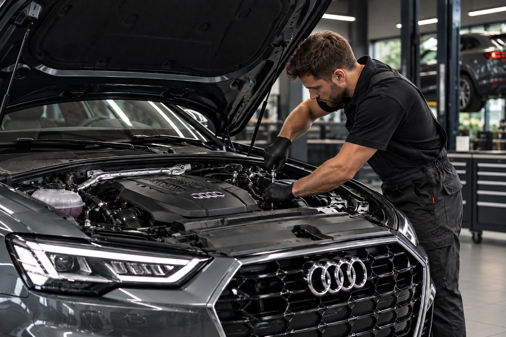
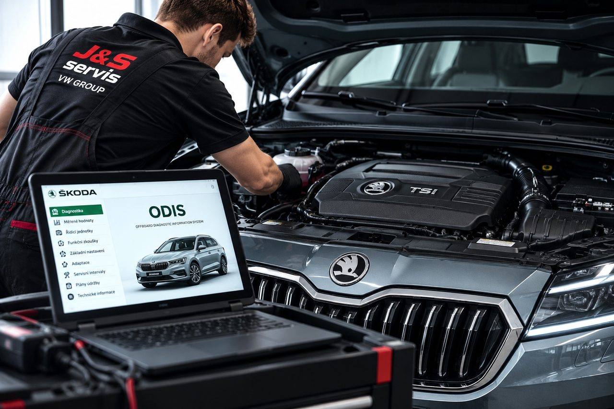
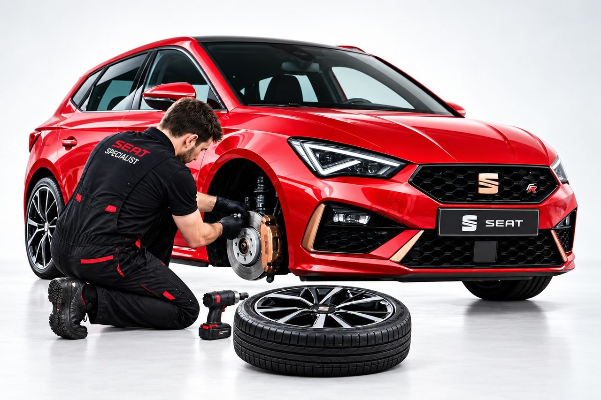

Bảo dưỡng xe

XƯỞNG DỊCH VỤ Ô TÔ CHUYÊN MÔN ĐỘC LẬP CHO VW GROUP
Dịch vụ chuyên nghiệp dành cho xe Volkswagen, Audi, Škoda, SEAT và CUPRA kể từ 1994.
J&S SERVIS ở Statenice gần Prague chuyên về bảo trì, chẩn đoán và sửa chữa xe chở khách và xe thương mại của nhóm Volkswagen.
Chúng tôi sử dụng hệ thống chẩn đoán ODIS của nhà sản xuất, các dụng cụ chuyên dùng VAS dành cho xưởng sửa chữa và thiết bị đo lường phù hợp cho chẩn đoán và sửa chữa. Công việc của chúng tôi theo các thông tin kỹ thuật và thủ tục dịch vụ của nhà sản xuất.
Chúng tôi tập trung vào việc xác định nguyên nhân của lỗi một cách chính xác, thực hiện sửa chữa chất lượng và giao tiếp rõ ràng. Chúng tôi giải thích cho khách hàng những phát hiện của chúng tôi và thực hiện thêm công việc chỉ với sự chấp thuận của họ.
Bảo trì theo lịch trình
Phạm vi kiểm tra dựa trên kế hoạch bảo dưỡng, tuổi xe và số kilômét đã đi. Phạm vi này bao gồm các hạng mục thay thế và kiểm tra theo quy định để phát hiện sớm hao mòn và hư hỏng có thể xảy ra. Chúng tôi sẽ thông báo cho bạn về những thiếu sót được xác định và các hành động được khuyến cáo.
Chúng tôi chọn các bộ phận phụ tùng và chất lỏng vận hành theo yêu cầu của một chiếc xe cụ thể. Chúng tôi ghi lại đúng công việc được thực hiện và, đối với các xe có lịch sử dịch vụ điện tử được hỗ trợ, ghi lại kiểm tra dịch vụ trong hệ thống có liên quan.
Chúng tôi cũng chăm sóc xe mới theo bảo hành. Bạn có thể tìm thấy nhiều hơn trong phần Bảo dưỡng xe mới còn bảo hành (GVO)
Để đặt lịch, vui lòng cung cấp VIN, số km hiện tại và công việc cần làm hoặc mô tả vấn đề của xe.
Dịch vụ theo hãng
-

Dịch vụ Volkswagen
Trung tâm dịch vụ ô tô độc lập tập trung vào công nghệ thương hiệu Volkswagen.
-

-

-

Dịch vụ SEAT
Dịch vụ bảo dưỡng toàn diện xe SEAT theo quy trình bảo dưỡng của nhà sản xuất.
-

Dịch vụ CUPRA
Kiểm tra dịch vụ thường xuyên xe CUPRA theo kế hoạch và quy định dịch vụ của nhà sản xuất.
-

Dịch vụ Volkswagen Commercial Vehicles
Caddy, Transporter, Caravelle, Multivan, California và Crafter.
-

Bảo dưỡng xe mới còn bảo hành (GVO)
Ngay cả với một chiếc xe mới đang được bảo hành, bạn vẫn có thể sử dụng dịch vụ xe hơi độc lập.